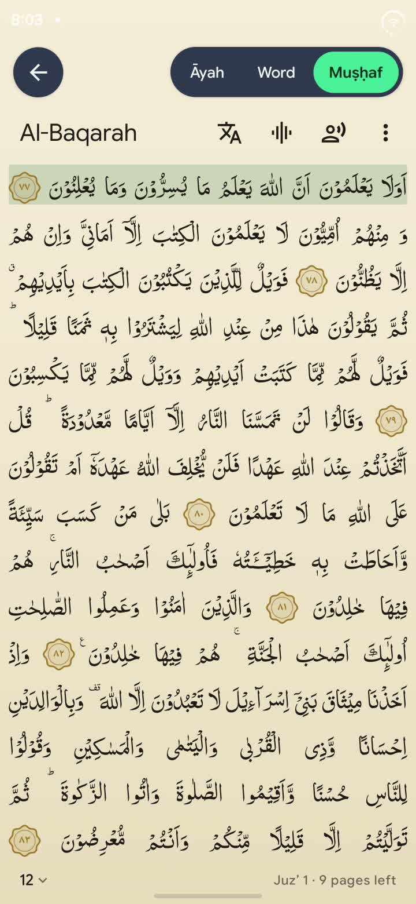
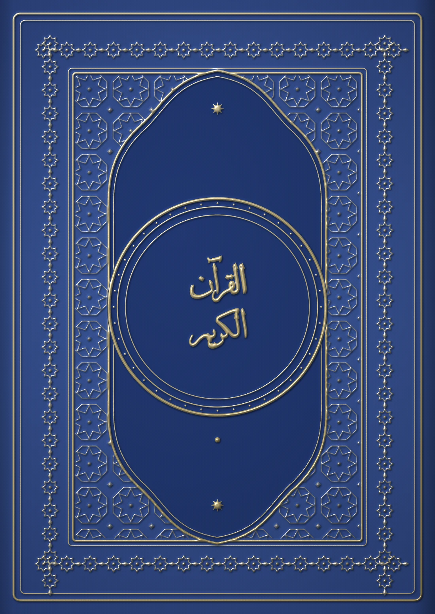
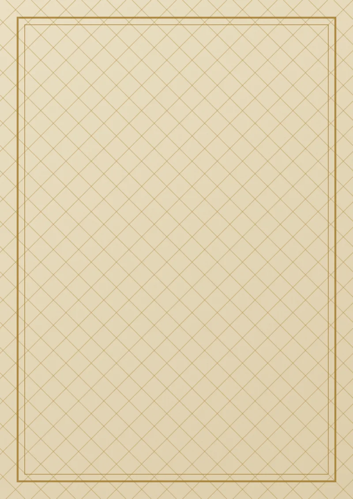
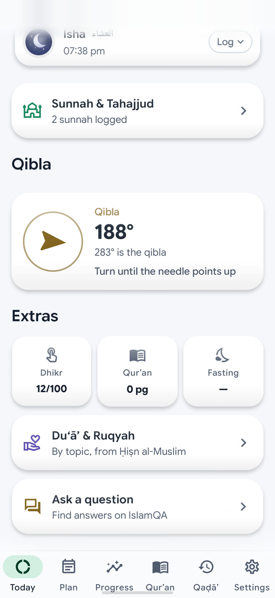
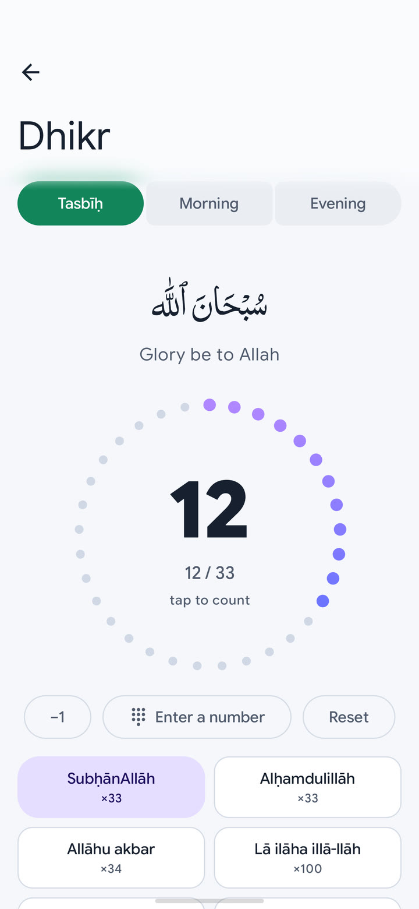
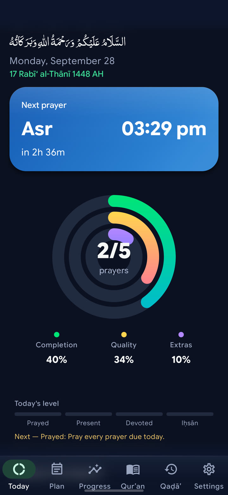
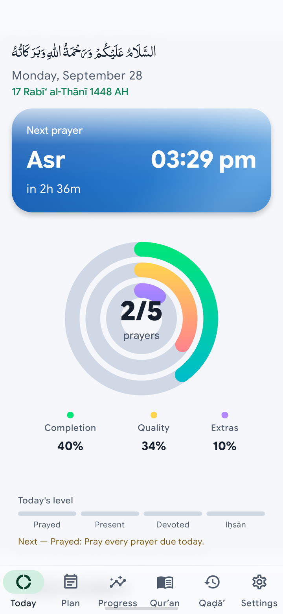

604 pages. One at a time.
A map of the whole muṣḥaf that fills as you read.
Now on Google Play
Salah Rings turns your five daily prayers into three rings you close — the way your watch closes activity rings.
Free to download · Android & Wear OS
The oldest daily habit there is.
One logo, three habits — and a day you can see.
Completion fills as you pray each of the day’s prayers. Quality fills more for prayer in jamāʿah, on time. Extras fills with dhikr, Qurʾān and the sunnah.
Mashallah. Then do it again tomorrow.
The next prayer, the countdown, and your three rings — the moment you open the app.
Prayer times, adhkar and habits on one timeline, with a week strip to look ahead.
Missed one? Log it, and clear it when you pray it. Nothing gets written off.
Tap to count, with a ring that fills to thirty-three and morning & evening adhkar.
A calendar that fills with green, week by week, and a streak you won’t want to break.



Twelve great masjids to build, one prayer at a time.
Your rings, the next prayer and a tap to log it — without reaching for your phone.
A map of the whole muṣḥaf that fills as you read.


The fortress of the Muslim — its supplications for every moment, searchable and always at hand.


It opens and it works. Your prayers stay on your phone.